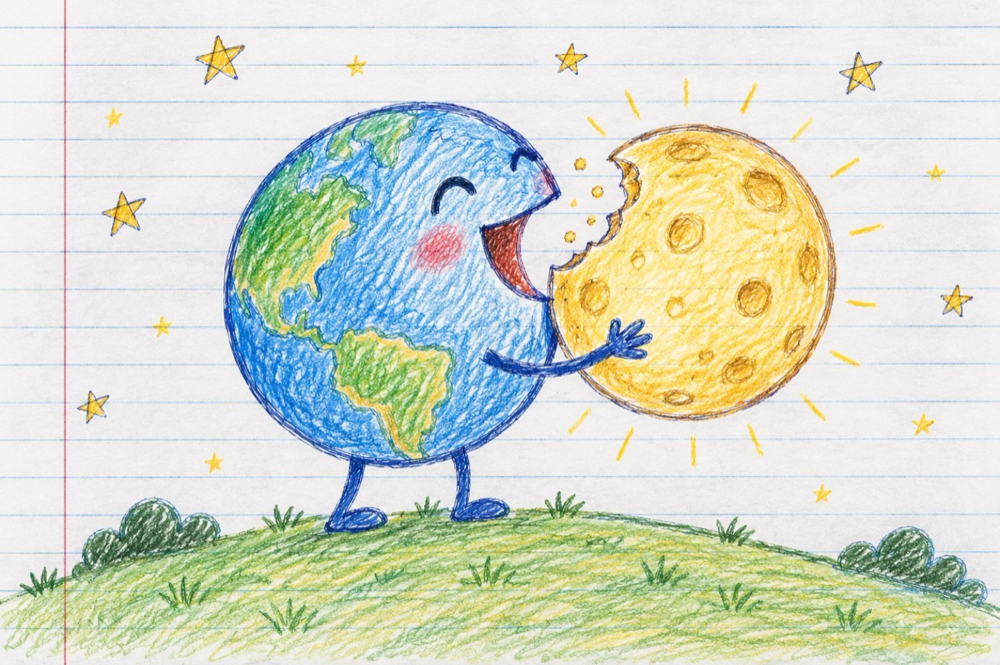

Nici pe cer nu e dreptate
Nici pe cer nu e dreptate
Pe pământ nu mai vorbim!
Până și luna se împarte
Cea pe care o iubim.
Priviți marea-mpărăteasă
Parcă e un glob de aur
Când dă după deal să iasă
Ai în casă un tezaur!
Și așa noapte de noapte
Tot pământu-i luminat
"Cineva" lucrează-aparte
Ca un hoț prins la furat!...
Și n-o să vă vină-a crede
Cel pe care-l știm ca sfânt
Cu ochiul liber se vede
Nu e altul, decât al nostru pământ!
Care după cum se știe
Cu a lui foame nebună
Mușcă și câte-o felie
Și ne lasă fără lună
Asta sigur nu e bună
Popular vorbind, fură propria-i căciulă!...
Vasile Groza
Apare și în: Privește-mă în ochi (2019).